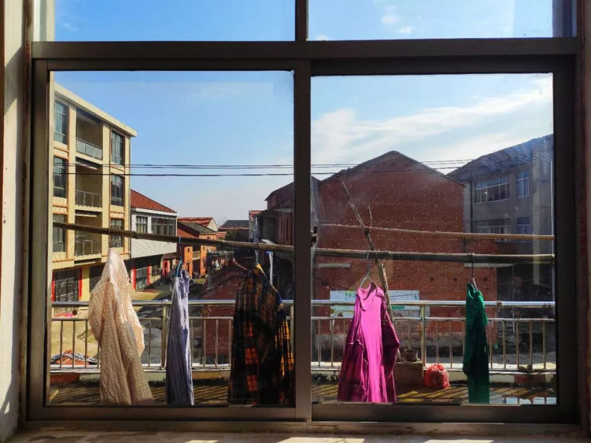
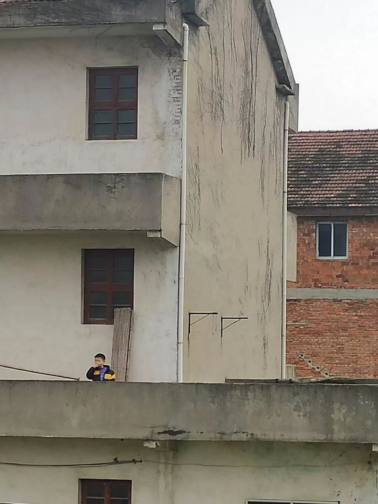

我们在一起做的事情
原文链接 备份链接 每天晚上泡脚时，我跟母亲总有一件事情要做：搬来小板凳，母亲坐下，我一边泡脚一边给她捏肩。她低下头，露出脖子，我按下去时，她“呀”了一声，我问是不是力度大了，她说没事，“一天到黑窝在房里看电视，总是这里疼那里疼，要是去地 …

凌晨四点就醒了，连续几天如此。倒不是失眠，而因那响起的鸡啼声。可以听得出是一只鸡在叫，嘹亮的声线盘绕在静默的夜中，久久不去；耐心地等了一会儿，又有另外的鸡啼声起而呼应。它们像是在寂寞地对话。
听着听着，我又一次睡了过去，到了六点，又一次醒来，这次鸡啼声不知所踪，轮到鸟鸣声上场，也不再是一两只。啾啾。嘟嘟。丢丢。咯咯咯。哒哒哒。噗噗噗。咯——哩——咯咯。也不再是一处，而是环绕着我的屋子，四面八方都有。
渐渐地，开始有了人声，垸路上有人相互招呼着，“起来了？”“去菜园？”“塘下有位儿洗衣裳啵？”母亲也起来了，那熟悉的脚步声，在楼下响起。
拖到了七点多，我也该起床了。穿好衣服，洗漱完毕，把客厅和房间的窗户都打开，一阵清冽的风徐徐灌进来。放眼看窗外，菜园、麦田一片霜白，麻雀在红瓦屋顶上追来逐去。
我几乎快忘了疫情的存在，仿佛在这个小村落里，生活不会受到任何影响，依旧往前伸展。但到了上午，那喧闹的声响止住了。大家又一次待在各自的家中。
阳光好时，年轻人坐在门口刷手机，上一辈的窝在房间里看电视。城里已经开始限制人随意出入了，垸里虽然没有如此严格，可村干部也开始督促人们不要聚集；垸口也有了巡逻的人，车和人都不能出入。
我因为不能返回北京，只能在家里处理工作。有时候也会想起在北京的日子，也是七点多起床，洗漱完毕去坐地铁，中间换乘一次后，出了地铁口，再坐公交。
常常到公司时，没有几个人来。坐在自己的办公桌上，看对面居民楼的老人家晾晒刚洗好的衣服。陆陆续续的，同事们都来了，相互间打着招呼，一天的忙碌开始了。
这样的场景时不时浮现在我的脑海中。我想念生活了九年的北京吗？在那里，完全是另外一种节奏的生活。我用工作、朋友、兴趣编织了一个独属于我的个人世界。可是在家中日久，那个世界离我越来越远。
每一年回家里，我都是一个客人，住几天就走。而现在，我坐在自己的房间，看着日光从这边慢慢地移到那边，阳台上洗好的衣服随风飘动。此时再说起北京，像是一场旧梦。
垸里到了下午又开始热闹起来，不是因为人群的热闹，而是因为隔壁的歌声。叔爷家里能唱卡拉OK，到了下午两三点，不出意外，在叔爷家二楼会传来堂弟爱人的歌声：《涛声依旧》《牵手》《星语心愿》《最炫民族风》……一首接着一首，两个小时唱下来不带喘气的。
有时候听到有人叫我，一转头看窗外，对面另外一位堂弟家的孩子冲我喊道：“庆儿叔，你闷不闷？我给你吹口琴，要得啵？”我还没说话，他就开始吹起来，我一听是《一闪一闪亮晶晶》。堂弟在里面说：“莫吵到你叔工作。”孩子说：“么人说哩，叔叔明明听得很入迷！”
等歌声和琴声停歇，垸里又一次恢复平静。到了下午六点，太阳落下，晚霞升起，绯红的云朵漂浮在对面垸的天际线上，路上人开始多了起来。闭锁了一天的人，开始三三两两地往垸口走去。
在省道那边，几家小超市开了门，米、面、油、菜，最是抢手。大家戴着口罩，挑选自己要买的东西，结账时还不忘讨价还价。大家在那时是兴奋的，因为几乎一天没怎么跟别人说话，所以说得特别多。
等两手拎满了东西出来时，天已经完全黑了。垸里的路灯一盏一盏的亮起，白色的光洒在空旷的路面上。大家各自回家后，关上大门，巨大的静谧开始笼罩着大地。偶尔有狗吠声传来。一天又过去了。
清晨起来，菜园一片霜白。


阳光晒到哪里我就挪到哪里。

堂弟家的孩子在吹口琴。

邓安庆
微信扫一扫赞赏作者 赞赏
长按二维码向我转账
受苹果公司新规定影响，微信 iOS 版的赞赏功能被关闭，可通过二维码转账支持公众号。
原文链接 备份链接 每天晚上泡脚时，我跟母亲总有一件事情要做：搬来小板凳，母亲坐下，我一边泡脚一边给她捏肩。她低下头，露出脖子，我按下去时，她“呀”了一声，我问是不是力度大了，她说没事，“一天到黑窝在房里看电视，总是这里疼那里疼，要是去地 …
原文链接 备份链接 今天是武汉封城的第十四天，也是阳光灿烂的一天。 这两周发生了很多很多事情，简直是人生中最漫长的两周。武汉人民度过了一个前所未有的春节，而所有人的心情，随着好消息和坏消息的交叉传来而起起伏伏。 昨天情绪崩溃，很快打起精 …
原文链接 备份链接 （一） 早上去长江大堤上散步。不一会儿，远远地看见一个人走过来，很像是母亲，等她走近，一看还真是母亲。问她为什么来了，她说：“我一直在寻你。”我又问出了什么事，母亲笑道：“就是想跟你一起走走。”我们一起转身百米港走去， …
原文链接 备份链接 今天是武汉封城后的第十二天。 仍旧是完全宅在家里的一天。 马上就是封城两周，但拐点似乎还远远没有到来。武汉之外，或者说湖北之外的区域数据看来是暂时问题不大，但专家仍旧提醒要注意宅在家里一段时间，以防功亏一篑。 绝大部分 …
原文链接 备份链接 今天是武汉封城的第十一天。 封闭这么久，对于一个人口过千万的特大城市来说，是一个前所未有的挑战。 今天下雨了，天气很糟。典型的南方冬天，又潮又冷。 在夜色中看到邻居家的灯火已经是我最欣慰的事情，这个时候万家灯火让我觉得 …